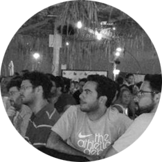

Hello UX Magazine
We would like to tell you why NetcraftAcademy is a great place to learn user experience
Netcraft Academy, the leading User Experience School in Israel, was established in 2010 out of our desire to share the knowledge and experience that we collect in the User Experience field on a daily basis.
The school offers various courses in which students are given the opportunity to experience and learn from the leading professionals in the field about the methodologies of proper work, hear real stories of clients from the Israeli and world markets and gain hands-on experience in the field using the most advanced tools that will help them in specification and design interfaces in the world of User Experience.
Our academic stuff are comprised with professionals who actually use and develop their skills in the field on a daily basis.
We gain vast experince in research, User Interface, design and development and we present and explaine the big picture to our students.
We support our students outside the classroom as well with every question they might have (the students receive consulting from all of the professionals at Netcraft).
Our Vision
"We love sharing our knowledge"
From the very beginning, Netcraft’s founders believed in sharing our knowledge and expertise with the UX community. Netcraft Academy is strongly driven by this value, providing real-world practical information to students from our current and past projects. In our courses, we illustrate our work methodology at Netcraft and reveal insights from successful processes, as well as mistakes we have learned from.
Our motto is to constantly share what we learn, whether by teaching new topics in our academy, updating our blog with interesting and relevant posts, or organizing conferences and events for the community.
The value we bring to our students
Personal Guidance and Support
Workshops and Alumni Events
Social Media engagment
New Courses in response to market demand
Promote our student and support them as speakers at our confrences and bloggers at our blog
“We offer a chance to learn from our experience, from our mistakes and countless success”
Our Students
When Netcraft Academy was first founded, we envisioned our target audience to be UI designers. We soon recognized an interest from other audiences, such as graphic designers, freelance professionals, project managers, marketing directors, and C-Level managers.
In an effort to cater to a broader audience, we expanded our course material to include additional topics, such as presenting designs successfully, pricing projects correctly, and creating an effective UX portfolio.
With the success of our full courses, we began receiving multiple requests from clients to provide staff training workshops. We now provide tailor-made workshops to various start-ups, mid-sized businesses, and enterprises, catering to the specific needs of each.
We love infographics!
| We have 712 graduates | And 19 courses | Teached by 12 lecturers | For 2.2 years |
“Netcraft Academy's User Experience and Usability Training course is a gem- full of Insights and essential information, accessible, fun and help you to get into the field as smooth as possible. Definitely recommended!”
Eyal Rofe, UX Designer and a lecture in the field of Android apps and innovation“This course has given me the opportunity to enter and integrate into the realm of UX. As part of Netcraft Academy's recruitment program I was offered and accepted to join the UX team at Bezeq, the largest telecommunications group in Israel”
Adi Katzav, UX designer at Bezeq“I wanted to study from the people who truly understand the world of UX, know how to present and pass their knowledge and be committed to the students. That's why I chose Netcraft Academy”
Sandra Bar-Tov, UX/UI designer at glassesusa“The course has perfectly given me a tool box as a graphic designer that's comes from designing for print. Now, I have the courage to do the transition I was so terrified of doing and start designing for the digital world”
Taly Schwartz, Graphic DesignerPrivate courses for companies
We provide tailor-made courses and workshops to various start-ups, mid-sized businesses, and enterprises, catering to the specific needs of each. We train and guide full UX and design studios in major companies.
Our local and international clients includes Amdocs, Nice, Comverse, HP, 888 Holdings, Mako (leading TV network in Israel), Haaretz (one of 3 leading newspapers in Israel) and more.
Our Courses
UX Strategy for Startups and Entrepreneurs
Our course offers a fast and focused course for entrepreneurs. The course combines information and examples from the field of user experience and practical tools. We help them develop prototyping skills that helps them to work fast and present their ideas to investors. In addition, we provide an in-depth understanding of user experience and how it contributes to the product success.
Usability and User Experience
Usability and User Experience is our first and most popular course at Netcraft Academy. Studying UX was in high demand, however the educational options in Israel were almost non-existent. Netcraft Academy’s UX course came to fulfill this need by offering a professional course that provides a clear overview of UX principles and methodologies, examines case studies and best practices, and builds practical skills through real-world assignments and exercises.

Mentors Program for Building a Portfolio
Personal guidance from Israel's leading UX professionals in building a design and prototype portfolio. We help young and experienced designers and UXers to choose their best work to present and if they don't have any, help them produce and build a portfolio from scratch. Each student is assigned to a personal experienced mentor that will guide him through the process of creating a portfolio. Our mentors are a part of Netcraft's team includes, our CEO and Art Director.

Code for Designers and UX Professionals
Although designers do not actually write code they are required to know the basics so that the work process will be professional and lead to better results. In our course we teach Designers and UX professionals the code basics terms, help to engage better with developers (that will save time and money), Produce easy to build designs, use the full capabilities of available technologies and understand the product better than its Photoshop identity thus prototype and design better.

From Print to Digital
This course helps print designers to gain skills and become digital designers as well. We introduce them with the different platforms and their rules, the connection between usability aesthetics and business objectives, identifying and matching the expectations and habits of users, rapid detection of relevant content (Findability), an understanding of the technological processes of production and work with developers, adapting the interface to the limitations of technology and more.

HTML5 for developers
As the HTML5 was released we decided to help experienced developers to adjust to the changes. This course presents new elements and capabilities, such as video and audio, localization, storage, and use of the canvas and more. The students will work on an ongoing project according to the highest professional standards in order to gain complete control of HTML5.
Example cilabus from the course: User Experience Design
-
Entering the World of User Experience What is user experience and what affects it?
-
Guidelines for an Effective User Experience When we promise a good user experience there are a number of basic rules that guide us that we'll review.
-
Coming Up with the Best Solution, Methods for Optimal UX Design In this lesson we will learn the UX techniques that serve us.
-
Specification Documents and Work Environments Methodology for creating wireframes and rules for producing usable interfaces.
-
Cognitive Processes and the Limitations of Human Perception Insights from research studies.
-
Preliminary Research Why research is so critical and how different types of research can help us improve and ensure, the success of the final product.
-
Personas and User-Centered Design Methodology, guidelines for carrying out a preliminary user survey and the persona research process.
-
Information Architecture Learn tools and models for defining the information architecture and discerning critical user flows.
-
Aesthetics and Infographics Explore the most valued and widely-used approach for displaying information- infographics.
-
Usability Testing and Research Methods for Interface Validation examine methods for usability testing, tools and how to use them correctly.
-
Browser-Based Interface Design Solutions to different screen resolutions, review scrolling behavior, understand the Foldline, and more.
-
The Mobile User Interface We will learn about the various device platforms, focusing on smartphones and the specification processes in the mobile environment.
-
Tablet Interfaces How to provide the right user experience for tablet devices?
-
UX and Design for Smart TV How do you design for a world with no mouse and keyboard when the screen is out of reach?
-
E-Commerce We will review rules that allow us to produce a good buying experience on any platform.
-
From Print to Digital Design How to make the transition to digital design?
-
Advanced Axure - Interactive Prototypes A brilliant way to test interfaces that you’ve created, preparation of usability testing and presentation in front of clients.
-
Technology for Designers and UX Professionals We will present the basics of code anf HTML5.
-
Gamification The concepts that make games so addictive and understand how to use these concepts in specification and design.
-
Data Mining We will learn about the most common and impressive tool and learn how it can significantly improve our work.
-
Presenting Prototypes to Clients How to properly present you specifications (and your design)?
-
Responsive Design How to design responsive products and gain hands-on experience in various approaches?
-
Pricing Design and UX Review the principles of pricing, pricing forms and create a sale process to support your work.
-
Presentation of Final Project In the last session the students will present their final projects and receive feedback.
Continued Learning
Being a UX professional requires constant learning and discovery
Information in the field is ever changing and evolving, and as UX professionals, we must evolve with it, staying up to date on industry news and trends.For this reason, enrollment in Netcraft Academy includes much more than the 16-week course; it means joining our family. We help our alumni continue their UX education well after the end of the course with special alumni events, networking opportunities, and personal guidance and support.
New Courses - Part of our responsibility as UX educators is anticipating future subjects and skills that will be relevant for industry professionals.Several months ago, for example, we noticed that a growing number of job postings for visual designers asked for knowledge in HTML and CSS. As a result, we designed a pilot program teaching code to designers and UX specialists. The demand quickly grew, and we are now opening the third session for this course. Other courses that opened this year based on recognized needs include “Building an Effective Portfolio” and “Visual Design 101 for UI Specialists.”
Workshops and Alumni Events- With the evolution of the industry, we regularly update our course material and add new subjects to the syllabus. We host frequent events for our alumni community that include lectures on the newest topics added to the course. Additionally, we offer these topics as workshops to the broader community. Examples of workshops include Project Pricing, Legal Practices in Design, Lean UX, and Axure Tutorials.
Personal Guidance and Support- Our students are our top priority, and it is a goal of ours at Netcraft Academy to devote individual attention to each student. We are in frequent contact with both our students and alumni, creating an “open door” environment in which they feel welcome to call to consult on personal projects, receive professional advice and career guidance, or just come soak up inspiration at our offices. Students and alumni communicate daily with our team of UX experts, including Netcraft’s CEO himself.
Facebook Groups- Each course at Netcraft Academy has a designated Facebook group for interacting with the other students and instructors. Afterwards, all alumni become part of a larger Netcraft Academy group which operates as a platform for sharing interesting articles, posting job openings, publicizing our events and sharing advice.
Our community-wide events – Ux on Beer and Digital Design – have separate Facebook groups in which we share interesting articles, inspiring websites, helpful tools and event updates.
Netcraft Blog - As mentioned earlier, our blog serves as a great tool for keeping our community informed. The Netcraft Blog has been active since 2006 and is updated monthly with new findings, recommendations on books and UX tools, and event summaries including all presentations. We also give our students and alumni the opportunity to write a post with our guidance and get published on our blog.
Conferences - because the UX industry is dynamic and in constant change we keep it our business to keep our alumni updated. That's why we conduct a yearly conference for our past student in which we give lectures about updates in the field. The other group of conferences is: Digital Design, UX on BEER and Dev Shots.
As mentioned above, our UX on Beer and Digital Design conferences – unique in their style – enable valuable and inspiring learning to our community. We invite the leading designers and UX professionals to share their knowledge and experience with the audience.
In our constant effort to promote our alumni, at each conference we offer special opportunities for our alumni to participate as one of the speakers. We give them advice, guidance, and support to produce a winning lecture.
Digital Play is our yearly national conference for graphic designers – a full day of inspiring lectures, networking opportunities, and fun surprises. At the last conference, we held a competition between three teams of three industry-leading UX designers. Running simultaneously to the lectures, the three teams were given six hours to design and produce a prototype for a fictional product chosen by the audience – in this case, an anger management application. Conference participants could visit the team stations throughout the day to watch them work. At the end of the conference, the audience voted in real-time on the winning application. It was great fun and a wonderful way to experience the professional work process – live!
Give back to the community
In line with our vision, Netcraft makes it a priority to give back to the community. Netcraft provides complimentary consultation to Box of Deams, a non-profit organization that makes less fortunate children’s dreams a reality. We are currently working on a new app for the organization.
Netcraft’s contribution helped promote Box of Dreams, which has now fulfilled more than 100 dreams.
Additionally, in our constant effort to promote innovation and UX initiatives, we offer complimentary lectures and workshops to groups of startups and entrepreneurs.
-

UxOnBeer
we organize a monthly conference to enrich the UX community.
We provide interesting up to date lectures and invite the best UX professionals to speak.
We have between 5-8 speakers who give short and to the point lectures (10 minutes each). -

DigitalPlay
every month we invite young and experienced designers to a free conference in a local bar and present short and to the point lectures (10 minutes each).
We share our experience and invite leading designers to speak and share their knowledge with the crowd. -

DevShots
Netcraft Dev Meetup is a monthly get together of Netcraft's developers and their guests.
Each meetup have two speakers that present a 30 minute presentation or hands-on session with latest technologies or topics that we deal with daily.
In addition, we orgenize a monthly conference for the FED's community.
DigitalPlay the biggest convention for digital designs in Israel
Digital Play is a full day professional conference that take place once a year. This conference unit the best Designers and UX professional in Israel to one venue to listen to up to date lectures about recent developmet in the field. This event bring together the design community and enable them not only to engage with one another but to explore and learn new innovatives work methods and tolls that will assist them with their day to day work.
Our Experience
The content of our courses at Netcraft Academy is largely based on Netcraft's work experience as a leading UX agency. Our day-to-day work on a wide-range of projects enables us to bring up to date information to our students. Students learn from real case studies and work processes and are trained to use professional prototyping tools used by Netcraft’s UI experts.
Our professional programs are incorporated in the curriculum of leading academic institutions in Israel such as IDC, College of Management, HIT and more.
The team of instructors at Netcraft Academy is comprised of UX experts from Netcraft, working daily on current and diverse projects. They are all specialists in the fields that they teach, with a variety backgrounds in industries including design, research, psychology, technology management and education.


About Netcraft
Netcraft is amongst the leading UX agencies in Europe, and one of the fastest growing UX agencies in the world. Our track record since 2012 include a range of Global Corporations, such as SingTel, Cisco, Amdocs, NICE, Orange, Comverse, as well as Digital Market Leaders such as Conduit, Kenshoo, Tufin Technologies etc. Netcraft is comprised of more than 50 professionals, each an avid web follower, be it Functional, Graphic, or Development.
Netcraft conducts several realms of work; The main realm is providing high-end User Experience consultancy, while employing User Centered Design methodologies and advanced Usability Testing such as Eye Tracking. Our UX services are comprised of Qualitative Researches, Strategy and Concept, Functional Design, Graphic Design, Branding, Usability Testing and Front End Development. The second realm, is teaching via The Netcraft Academy- which is a designated School teaches User Experience and Front End technologies such as HTML5, Mobile Web development etc.
The third realm, is open professional events to the local web community which include lectures and seminars. These are branded under "UX on Beer" and "Digital Design", and have a usual attendance of 500-800 web professionals.
A fourth realm is "Web Acceleration Program", in which we pick exceptionally talented candidates and enroll them as apprentices in an arduous six month learning program. These apprentices do not work on projects, and spend their days researching and learning for six months under supervision of team leaders.